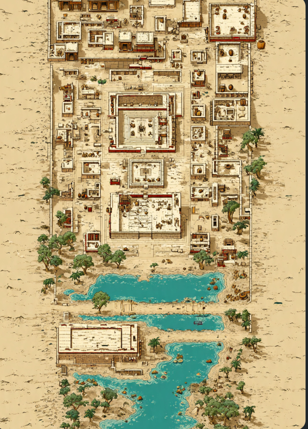

Duniya ki sabse prachin aur viksit sabhyataon mein se ek, jo apni unnat taknik aur vyavastha ke liye jaani jati hai.
🏛️ 1. Behtareen Nagar Niyojan (Town Planning): Yahan ke ghar, pakki ईंटें (bricks), aur sadkein ek nishchit grid system ke adhaar par bani thin, jo aadhunik shehron ko bhi takkar deti hain.
💧 2. Aadhunik Jal Nikaasi (Drainage System): Is sabhyata ka bhumi-gath (underground) naali aur jal nikaasi ka system us daur ke hisab se sabse adbhut aur saf-suthra tha.
🏙️ 3. Harappa aur Mohenjo-daro: Yeh is sabhyata ke sabse pramukh aur viksit nagar the, jahan bade-bade an-bhandaar (granaries) paye gaye hain.
⚖️ 4. Vyapar aur Tol-Mol: Yeh log vyapar mein aage the, aur saman tole ke liye pathar ke vajan (weights) ka upayog karte the.
🎨 5. Kala aur Hastashilp: Mitti ke khilone, sundar bartan (pottery), aur 'Dancing Girl' ki kase ki moorti yahan ki unnat shilp-kala ka praman hai.
"Prachin gyan aur mehnat ki yeh dastaan humein sikhati hai ki samajhdaari se kya banaya ja sakta hai."